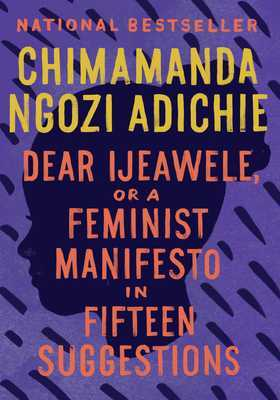
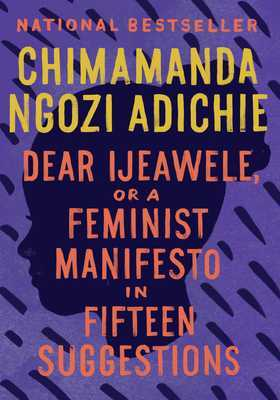
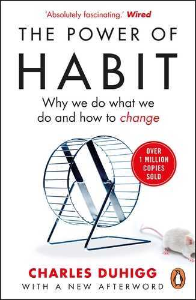
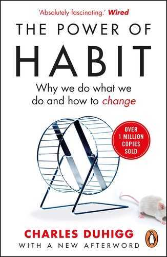

Core Issues
Patricia as a protagonist
Feeling Like an Outsider
Humor as Armor
Thinking for Yourself
Love and Relationship
Patricia as protagonist

“Even if he never leaves the ghetto, he will know that the ghetto
is not the world. If that is all I accomplish, I've done enough”
Patricia, Trevor Noah's mother, comes out as a strong and clever woman who thinks on her own and makes her own choices regardless of what the law states and what the rest of society thinks.
Her resistance comes out very clearly when she decides that she wants to have a baby with a white man, despite it being a crime during the apartheid period. In that period, women could only work as maids, but she went ahead and took a secretarial course and went to the township, where she moved around disguising herself as a prostitute to avoid being questioned by the police for being in a white area. She was arrested many times, but she never went back home, and this is where she found Robert and decided that she wanted a baby with him, and so she asked for his sperm. From this, Trevor learns about resilience and how to overcome obstacles in life and not dwell on the problems, but to move on with life while being positive. Trevor was told how his mother was working hard, and this is exactly what he does when he starts working and fending for himself.
Her strength and courage to ask for sperm brought Trevor into the world, and this is where his development begins. She goes ahead and shows her son that there are no limitations to what he could do. She takes him to the white neighbourhoods, and this changes Trevor's imagination, which contributes to his development because he is able to dream big. People thought that she was crazy for engaging in “white activities,” but she wanted Trevor to know that the ghetto is not the world and that he could go anywhere he wanted. She encouraged Trevor to form his own opinions and not to go with the flow.
Feeling like an outsider
"It is easier to be an insider as an otsider than to be an outsider as an insider."
Trevor, being born of black and white parents, couldn't fit into any group. During break times at school, people would break into their cliques and group according to their respective colors, as people were grouped by skin color. Soccer was played by black kids. The white kids played tennis, while the kids who played cricket were a mix. The Chinese kids would hang out next to the prefab buildings, the South African seniors and the popular pretty girls each had their own hanging places.
Trevor, being the only mixed kid out of a thousand, didn't know where to go. Even after having so many groups to choose from, he wasn't a natural constituent of a particular one. The colored kids would shit on him for being too black. He was adept enough with white kids not to get bullied. He got along with the poor black kids, but most of them took minibuses to school. They rode to school and back home as friends. They had their own groups. As I was reading this chapter, “OUTSIDER” in “ Born a Crime,” I had a feeling of deja vu. I think because I found myself living with people from different countries, just like Trevor living with people from different classes. Though we were all Africans and a few Indians in school, I still faced the challenge of fitting in. People spoke a different language and had a totally different culture, aside from what I know. I was termed as a foreigner and at the same time called black. I couldn't belong anywhere as I was the only one from my country and had no other person to play or talk to. And to make matters worse, the English I knew could only get me water for drinking if I were to be pushed on the battlefield for survival. I did not have friends, and it took me time to make friends. I missed school often so that I could avoid loneliness. I had to adapt to this situation and try to change it by learning English first, so I can communicate with people. I learnt the language after a while, and my active participation in school games helped me make friends with others. School life became a little bit better and worth living.
Humor as Armor

“Laughter is an escape. I feel like laughter reminds you
of your best self, your favorite self,
your freest self.”
In his book, Trevor Noah displays heavy and sad topics. He spoke about it in an easy-to-digest way, through humor. In the book, we see that his mother, Patricia, remarkably made their challenging life bearable through laughter and humor. In the book, Trevor says that, liife was a roller coaster, and Humour was the safety bar holding that was holding them together.Trevor acquires humor as a defining character trait and is seen using it in different ways to survive apartheid.
Trevor was always locked up during apartheid because he did not belong anywhere due to his skin colour. This gave him a disadvantage in his early school life, where he found himself alone with no friends and socially isolated. Yet using humour, he is able to fit in with different groups by being the class clown. He was also able to connect with black kids, where he discovered he wanted to be identified as a black individual. Throughout the book, we see instances where Trevor and his mother turned difficult situations into moments of laughter, like when they jumped out of a moving car, or when the mother was in the intensive care bed after being shot in the head. In both instances, they laughed through their pain, finding the brighter side in the darkness of the situation.
From Trevor's story, I am reminded of my best friend, who, once he opened up to me about his challenging childhood and was going through a rough patch with his father, to the point he ran away from home. Even though that was the most vulnerable topic he's ever spoken to me about, the manner in which he delivered it he delivered it had me laughing my ribs out, that's the kind of person he is, he finds humor in every situation.
Thinking for Yourself
"My mom did what school didn't. She taught me how to think."
Patricia's thought for independence is termed powerful because she relies on herself for most things. Patricia decided to leave her home and family to go build a house of her own. When Patricia decided to conceive Trevor, her bravery and independence were the ones that cheered her to have a baby. This is not only depicted as bravery but also being confident to break through obstacles. Her courage and confidence made her get what she wanted. She knew what she wanted only by thinking for herself, therefore, she constantly encouraged Trevor to think for himself about what he wants. Hence, Trevor was able to learn how to think by himself.
This influenced his career in various ways, as he learned this from his mother. When he started selling his CDs in the block he was able to think through it and see that being confined in one place was not bringing him any benefit. He had to think and come up with a solution that was meant to be substantial in his life and when he decided to move he was able to strategize on how he would make his decision not be impactful. When Trevor left his mother's house because he could not endure seeing his mother being beaten up, his mother encouraged him to live because she knew she had raised an independent soul who was able to make his own decisions, because she used to encourage him to practice independence and self-reliance. Even though he was leaving, he was confident enough because he knew he had thought it through.
His ability to think for himself enabled him to be creative enough to a point where he was able to host shows and interviews, where he could flow well and share out his opinions and ideas without fearing to be judged by other people because he knew that most people are restricted by the society to be able to express their views. This was influenced by his mother, who constantly told him that he should not be limited by anything when it came to sharing your opinion, even if it is against societal norms, as long as your intention is not meant to harm other people. This helped Trevor build some level of confidence in himself, hence succeeding in his career.
"Love is creative. When you love someone you create a new world for them."
Love and relationship
“I understood even from an early age that we weren't just mother and son we were a team” Trevor spent most of his life with his mom. And she is the focal point of his love and admiration. His relationship with his mom is one of the relationships that made Trevor who he is, characterized by hardship, strength and humor. Trevor didn't only learn from her verbal definitions of what's good or bad but also from her actions. The way she wasn't obedient to her mother-in-law and didn't defer to her husband says a lot about her independence and how much she respects her tribe's values. Her Xhosa name means “She who gives back” and she proves to be generous many times throughout the book. Trevor grew up watching his mom give faith to God, give an education and protection to him, give money to her parents, and give personal and financial resources to her abusive husband.
And when he grew up and started working, he shared his income with his friends. Having learned how to give just like his mom. Patricia was strict, and Trevor wasn't always on good behaviour and that made their relationship a bit fun. “Relationships are built in silence.” Some believe that for a relationship to exist, the people involved need to meet, see and talk to each other every day, but that isn't always the case. We could be away from people for years, and when we reconnect, it might feel as if we never parted. Trevor's relationship with his dad is one characterized by this dynamic. His father wasn't one for talking, so their relationship was built in silence. Sometimes, people don't have to tell you who they are; you can figure that out simply by spending time with them.
Trevor had a close connection with his dog Fufi. He used to follow her around but this one time, she left him and went to another house. He actually mentions that she was the first female to break his heart. That's when he realised that we don't own the things we love. He tells this story to people when they tell him about losing people. Although personally I think that is a weak analogy. The traditional ideal often positions mother as a figure focused on domestic duties and raising children but Trevor's relationship with his mom opposes this. They're a team suggesting partnership and responsibility. The traditional view of relationship sometimes implies a degree of possessiveness. But as Trevor said “you love people but you don't own the.” This emphasizes the value of respecting the freedom of the people you love. The traditional way focuses solely on finding a suitable spouse where as Trevor sees relationships as opportunities to grow.
 

 
